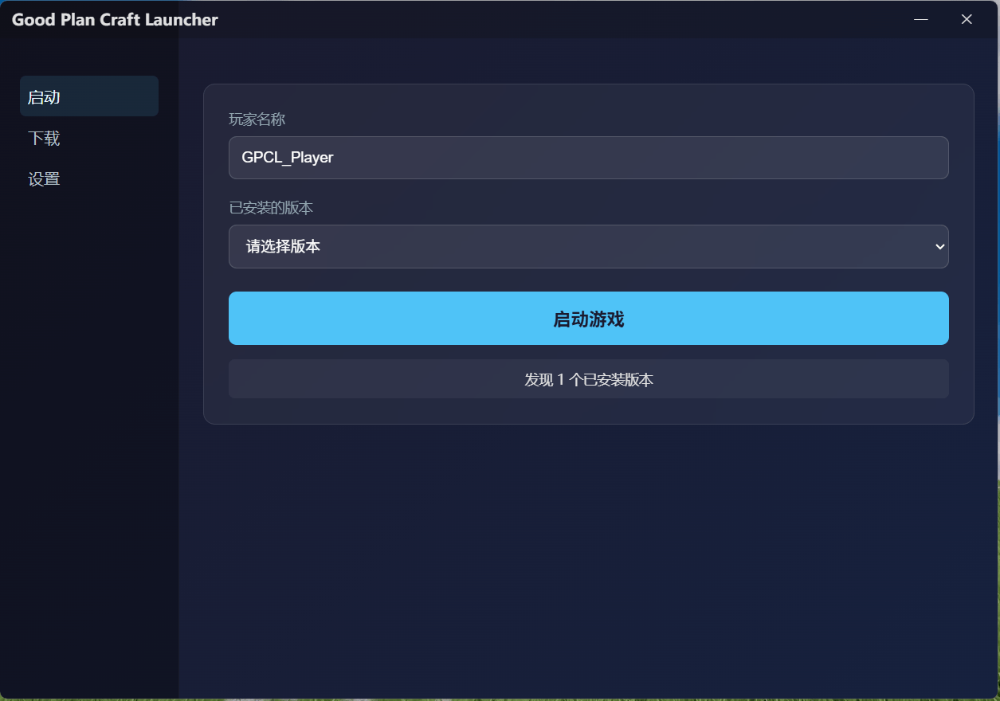
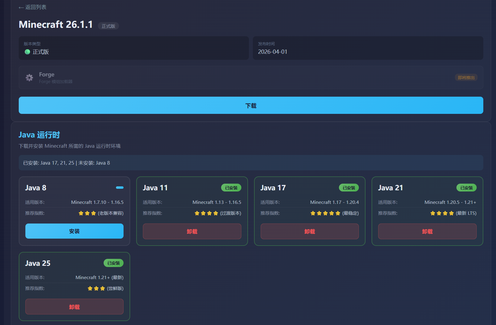
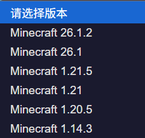

为玩家打造的实用工具，每一项都为「更快进入游戏」服务
支持 Microsoft 账户正版登录，安全验证，合规使用。
一键下载、安装、切换 Minecraft 各版本，自动处理依赖库与资源文件。
优化的启动流程与缓存机制，点击即玩，告别漫长等待。
自动检测并补全 Java 运行环境，支持自定义镜像源地址（默认使用清华大学开源镜像站）。
完整支持浅色模式与深色模式，自动跟随系统外观偏好，提供一致的视觉体验。
内置更新检测机制，支持可配置的日志自动清理策略，保持启动器长期整洁高效。
简洁直观的操作体验

主界面

下载体验

版本管理
选择你的平台，开始方块冒险
不高，但值得知道
Windows 10 64 位（1709+），Windows 11 同样兼容
启动器自动补全；建议手动清理系统中冗余或冲突的 Java 文件
启动器本体至少 90 MB 可用空间（不含游戏本体）
建议 2 GB 以上可用内存
Copyright (c) 2026 Yunyun(云云) By 虚舟实验室(CaelLab) / CaelLabGameTS
Licensed under the CaelLab BY-SA Code License, Version 3
or any later version. https://www.caellab.com/license/cbs-v3.txt
You are free to:
Share — copy and redistribute the source code and the compiled
output in any medium or format.
Adapt — remix, transform, and build upon the work.
Use commercially — for personal, commercial, or non-commercial purposes.
Run it privately — including on your own servers, without publishing
your changes.
Under the following terms:
Attribution (BY) — keep the copyright notice, credit the author, link to
this license, and state whether you made changes.
ShareAlike (SA) — derivatives must be distributed under this license or a
later version of it, with no additional restrictions.
Source code — if you distribute the work in built form, the complete
corresponding source must be made available.
No trademark — you may not use the "CaelLab" name to endorse your
version.
THE WORK IS PROVIDED "AS IS", WITHOUT WARRANTY OF ANY KIND, EXPRESS OR
IMPLIED, INCLUDING BUT NOT LIMITED TO THE WARRANTIES OF MERCHANTABILITY,
FITNESS FOR A PARTICULAR PURPOSE AND NONINFRINGEMENT.
查看过往版本与更新记录